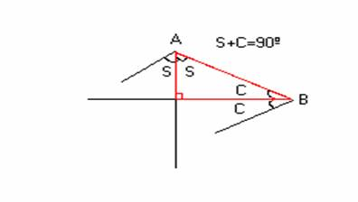

Para el aula
Problema 269
Ejemplos de problemas que plantean tareas ricas
¿Podrías construir un triángulo con sus dos bisectrices perpendiculares?
Vila, A., Callejo, M,L.
(2004): Matemáticas para aprender a pensar Nacea (pág 136),
Con permiso de
los autores, a quines el director agradece la gentileza.
Solución de Manuel Peña Alcalá, alumno
de 4º de Secundaria del Colegio Portaceli de Sevilla.
Si las
bisectrices son paralelas, entre la bisectriz del ángulo A y la del ángulo B
miden 90º, pues se forma un triángulo
rectángulo uniendo A con B. Pero como hablamos de la bisectriz, entre el ángulo
A y el ángulo B suman 180º (90º *2). Como un triángulo tiene 180º, el ángulo C
tiene que medir cero, y un triángulo no puede tener un ángulo de 0º, pues sería
una recta. No se puede construir un
triángulo con dos bisectrices perpendiculares.
